ZAF ２０２１年５月
今回の内容
『ＡＩの社会への活用』座談会、ほか
- ０ - 前座
- １ - 新ゼロからはじめるAI（古川郁衣さん）
- ペンギンのはなし
- ２ - Kaggle 奮闘記（石川達也さん）
- 植物のはなし
- ３ - 座談会：AI 応用分野について（米田稔さん）
- 『ＡＩの社会への活用』座談会
- ４ - きょうのさいごに
００ - ZAM 近況
ZAM ３月号
１ヶ月遅れになりましたが、リリースしました！
- オンラインフォーラムの投稿

- screenshots


- コピー本の作り方
前回と同様 『コピー本印刷用 PDF ファイル - B4 両面コピー（横綴じ）で B5 の冊子が出来上がります。』
から PDF ファイルをダウンロードして

- コンビニに直行！

- 白黒（１枚１０円）なら 180 円で、
フルカラー（１枚５０円）なら 900 円で、
コピー本が一冊できます！


- みんなに紹介する前に、やっぱり自分で確認と思って、印刷してきました……
- ……が、間違えました
- 仕上がり B5 なので B4 で両面印刷すべきところを、
B5 で印刷してしまいました…… - ……が、これ、結構かわいらしいかも
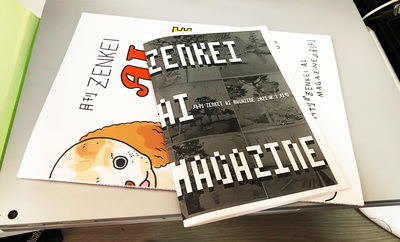 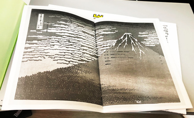 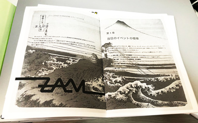 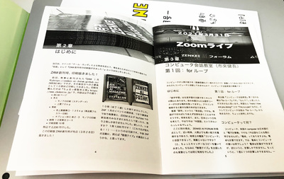 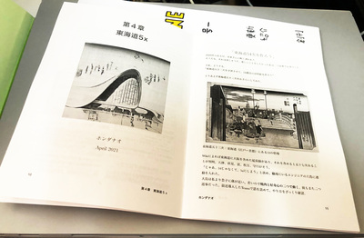 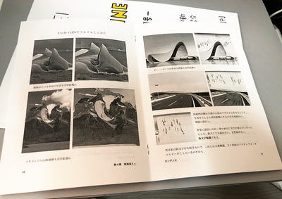 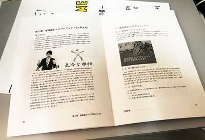 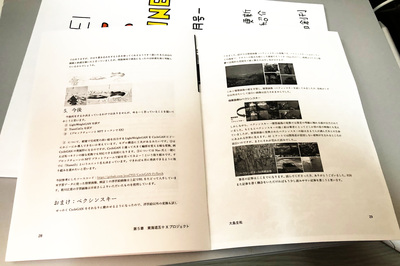 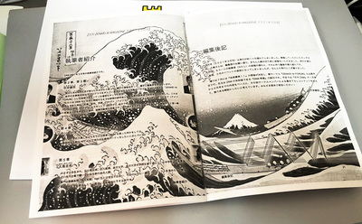 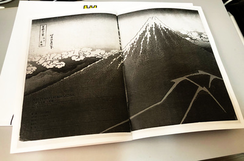 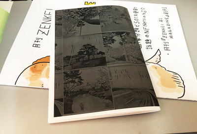 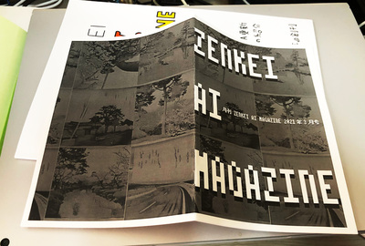
- お金がもったいないので、白黒で印刷しましたが、
基本、本文フルカラーの原稿です - Acrobat Reader のおすすめ設定


ZAM ４月号
本来、今日５月の ZAF では『ZAM ４月号』をリリースするスケジュールですが……
- 鋭意執筆中です
（３月号が完成しないと、まぁ、始められませんよね） - 予定通りの「はらんの予感」です


１ - 新ゼロからはじめるAI（古川郁衣さん）
- パルマーペンギンのはなし

２ - Kaggle 奮闘記（石川達也さん）
- 植物のはなし

３ - 座談会：AI 応用分野について（米田稔さん）
- ZENKEI AI FORUM は参加者のみんなでつくっていく「コミュニティ」です。
- ４月の ZAF で ZOOM に参加していただいた米田さんから、


- もうちょっと Business Oriented な方向も面白いかな、と
- ビジネスに適用できるような技術のディスカッションできればな、と
- その後、米田さんに話題提供をお願いして、
いちきが勝手に『ＡＩの社会への活用』座談会
という副題（？）を付けましたが、
今日のはなしになりました！
０１ - 技術書典１１
『ZAM 季報』夏号を書こう！
イベント『技術書典１１』までおよそ１ヶ月あります。
みんなで『ZAM 季報』を創刊しましょう！！
- オンラインフォーラムにスレッド切りました！

- まずはゴールを見える形にする意味で『表紙（仮）』を作りました！（またかっ）


- 計画（プラン）
- 予定では『月刊 ZAM』は１月号から６月号まであるはずのあので、 ベースはその合本
- 内容的な目玉は「書き下ろしコンテンツ」です
- サークルメンバーのみなさんからの寄稿を募集しています！


{kind=link}
{kind=link}
{kind=link}
{kind=link}
{kind=link}
{kind=link}
{kind=link}
{kind=link}
{kind=link}
{kind=link}
{kind=link}
{kind=link}
{kind=link}
きょうのさいごに
さて『ZAF ５月』の終わりは『月刊 ZAM ５月号』の執筆ですね！
- 本日の講演者のみなさま、原稿の方、よろしくお願いします
- ……というか、
その前に『ZAM ４月号』仕上げないとな
- それから、みなさんも『ZAM 季報』に向けて、じゃんじゃん書きまくってください！
今後の予定
- ZAF ６月３０日 - チーム・ホンダの『東海道５ｘ』の続編（完結編？）予定です！
- ZAF ７月２８日 - ここは『技術書典１１』のまとめになりますね